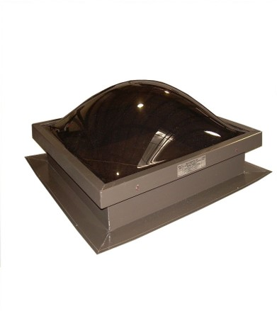

<div class="container mx-auto">
    <div class="flex flex-col items-center p-4">
      <h1 class="text-red-500 text-5xl font-bold p-4 text-center">
        Identifying Self-flashed Skylights
      </h1>
      <p
        class="text-red-400 text-3xl font-medium tracking-wide leading-snug text-center p-4"
      >
        This section will educate you on how to identify self-flashed skylights
        and how to measure.
      </p>
  
      <h2 class="text-red-500 text-5xl font-bold p-4 text-center">
        Types of Self-flashed Skylights
      </h2>
      <section class="flex flex-col lg:flex lg:flex-row-reverse lg:justify-center ">
        <div class="basis-1/2 max-w-md rounded overflow-visible shadow-lg m-2">
          
          <div class="px-6 py-4">
            <div class="font-bold text-center text-xl mb-2">
              Arylic Self-flashed Skylight
            </div>
            <p class="text-gray-700 text-base">
              A photo from this angle is the best angle to identify an arylic
              self-flashed skylight. You will want to look for the number of
              screws on the side of the skylight. An arylic curb mount will have
              two sets of screws, while a self-flashed arylic skylight will have
              only one set of screws.
            </p>
          </div>
          <div class="flex justify-center p-3">
            <button
              class="bg-red-500 hover:bg-red-700 text-white font-bold py-2 px-4 rounded-full"
              routerLink="/selfcal"
              routerLinkActive="active"
            >
              Measurement Calculator
            </button>
          </div>
        </div>
  
        <div class="basis-1/2 max-w-md rounded overflow-hidden shadow-lg m-2">
          
          <div class="px-6 py-4">
            <div class="font-bold text-center text-xl mb-2">
              Velux Self-flashed Skylight
            </div>
            <p class="text-gray-700 text-base">
              Velux Self-Flashed Skylights will have a grey frame and have a
              be a one piece skylight that is adhered directly to the deck. 
            </p>
          </div>
          <div class="flex justify-center p-3">
            <button
              class="bg-red-500 hover:bg-red-700 text-white font-bold py-2 px-4 rounded-full md:mt-6 sm:mt-5 xs:mt-6"
              routerLink="/selfcal"
              routerLinkActive="active"
            >
              Measurement Calculator
            </button>
          </div>
        </div>
      </section>
      <div class="container mx-auto">
        <h2 class="text-red-500 text-5xl font-bold p-4 text-center">
          How to measure a self-flashed skylight?
        </h2>
        <section class="flex flex-row-reverse justify-center">
          <div class="basis-1/2 max-w-xl rounded overflow-visible shadow-lg m-2">
            
            <div class="px-6 py-4">
              <div class="font-bold text-center text-xl mb-2">
                Measuring Self-Flashed Skylight
              </div>
              <p class="text-gray-700 text-base">
                The best measurement for a self-flashed skylight is the rough
                opening. In the above photo, the black lines show what the rough
                opening is.
              </p>
            </div>
            <div class="flex justify-center p-3">
              <button
                class="bg-red-500 hover:bg-red-700 text-white font-bold py-2 px-4 rounded-full"
                routerLink="/selfcal"
                routerLinkActive="active"
              >
                Measurement Calculator
              </button>
            </div>
          </div>
        </section>
      </div>
  
      <h2 class="text-red-500 text-5xl font-bold p-4 text-center">
        Velux Self-flashed Skylight standard sizes
      </h2>
      <div class="flex flex-col">
        <table
          class="border-separate border table-auto border-slate-400 lg:p-10 md:p-4"
        >
          <thead>
            <p class="text-red-500 text-lg font-bold text-center">Standard sizes of Velux Self-flashed skylights</p>
            <tr>
              <th class="border border-slate-300 ...">
                QPF Self-Flashed Code Size
              </th>
              <th class="border border-slate-300 ...">
                Frame Measurement (W" x H")
              </th>
              <th class="border border-slate-300 ...">Rough Opening (W" x H")</th>
            </tr>
          </thead>
          <tbody>
            <tr *ngFor="let selfflashed of selfFlashed">
              <td class="border border-slate-300 ...">
                {{ selfflashed.sizeCode }}
              </td>
              <td class="border border-slate-300 ...">
                {{ selfflashed.outsideFrameWidth }}" x
                {{ selfflashed.outsideFrameHeight }}"
              </td>
              <td class="border border-slate-300 ...">
                {{ selfflashed.roughOpeningWidth }}" x
                {{ selfflashed.roughOpeningHeight }}"
              </td>
            </tr>
          </tbody>
        </table>
      </div>
    </div>
  </div>
  